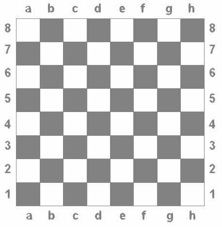

What Color Is That Square?
Positions on a chess board are identified by a letter and a number.
The letter identifies the column, while the number identifies the row, as shown below:

Write a program that reads a position from the user.
Use an if statement to determine if the column begins with a black square or a white square.
Then use modular arithmetic to report the color of the square in that row. Your program may assume that a valid position will always be entered. It does not need to perform any error checking.
Example:
Input = a1
Output = black
Input = d5
Output = white